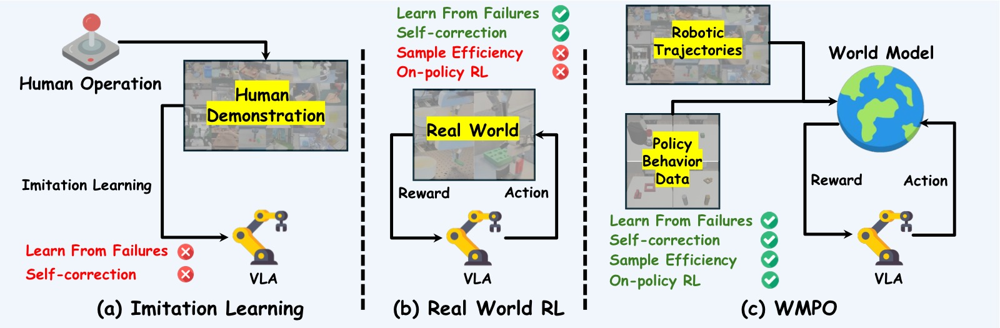
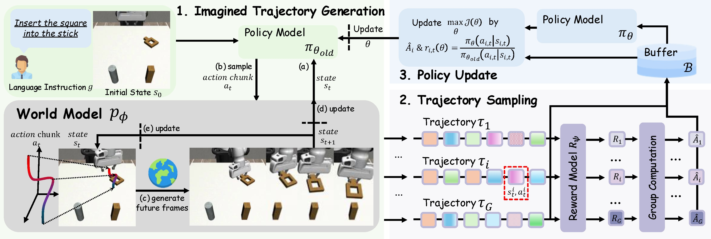
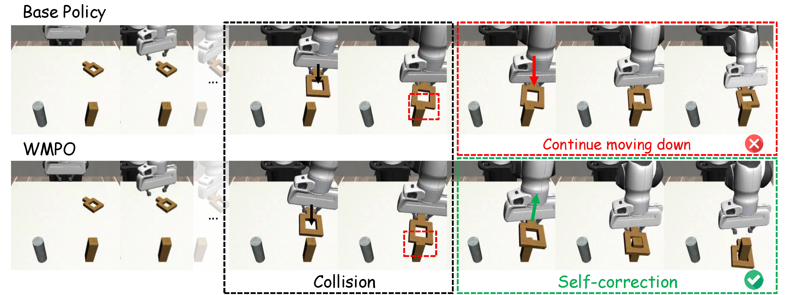
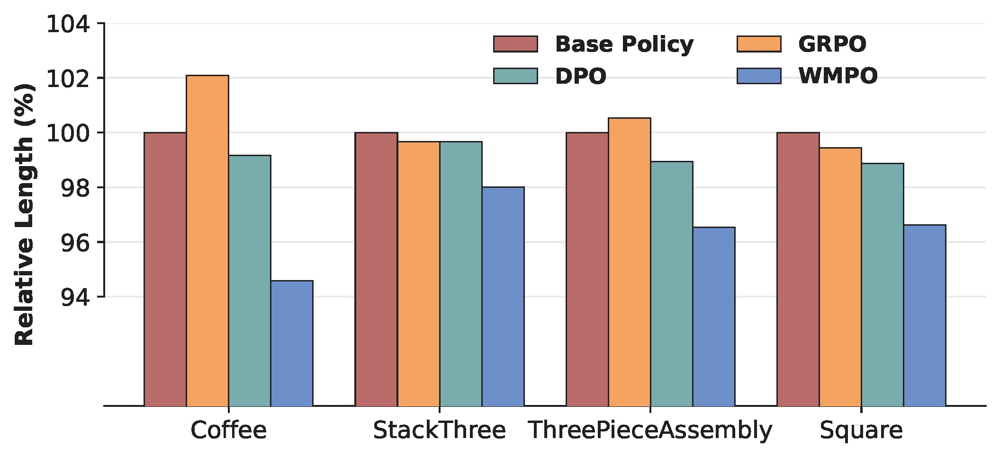
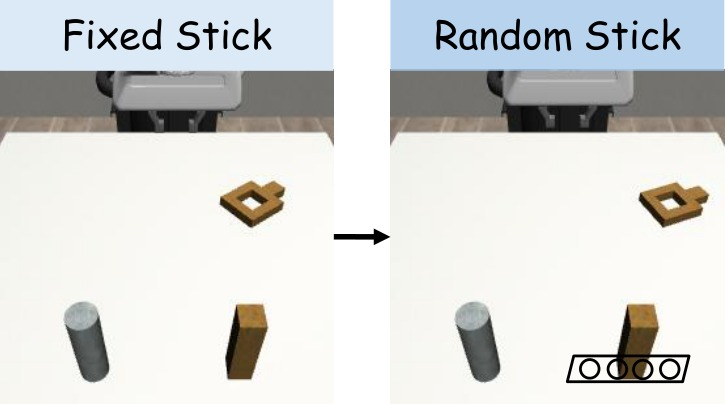
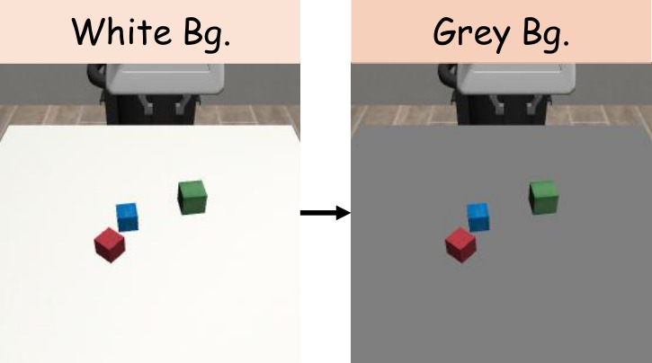
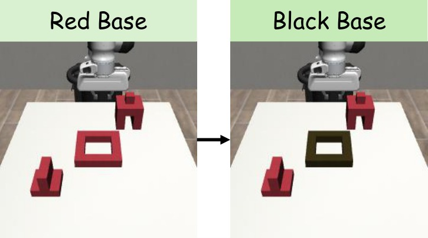
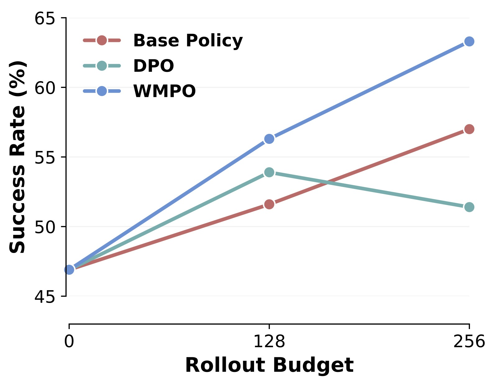
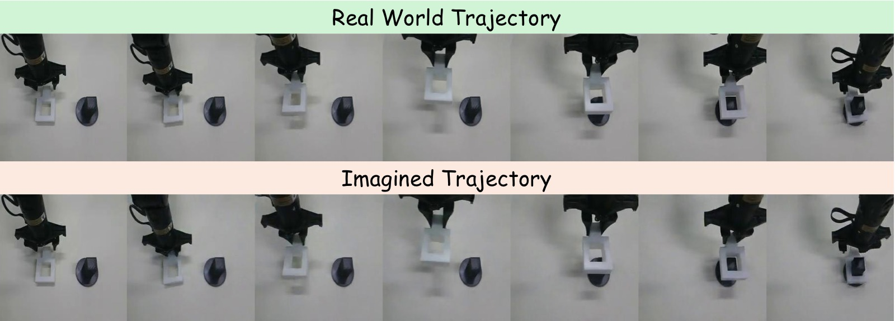

WMPO: World Model-based Policy Optimization for Vision-Language-Action Models
论文信息 - 作者：Fangqi Zhu1,2, Zhengyang Yan1, Zicong Hong1, Quanxin Shou1, Xiao Ma2, Song Guo1 - 通讯作者：Xiao Ma (ByteDance Seed), Song Guo (HKUST) - 投稿方向：ICLR 2026 - arXiv ID：2511.09515 - 代码：github.com/WM-PO（基于 verl + OpenSora，完整开源） - 项目页：https://wm-po.github.io/
一、核心问题
VLA（Vision-Language-Action）模型在机器人操控领域展现了巨大潜力，但存在两个根本性瓶颈：
- 模仿学习（IL）的脆弱性：现有 VLA 主要依赖专家演示做行为克隆，遭遇 OOD（分布外）状态时会产生级联错误，无法自纠正和从失败中学习。
- 真实环境 RL 的采样低效：直接在真实机器人上做 RL 需要数百万次交互，成本高、不安全、不可扩展。而构建精确仿真器又面临巨大的工程开销。
核心矛盾：IL 无法从失败中学习，RL 无法高效采样 —— 如何在不接触真实环境的情况下，让 VLA 策略获得 RL 的自我改进能力？
论文的核心洞察：利用像素空间（而非潜空间）的视频生成世界模型来模拟环境动力学，使 VLA 策略可以在"想象"中进行 on-policy RL，从而与预训练 VLA 的视觉表征保持一致。

子图 (a) 模仿学习（Imitation Learning）：数据流从左侧的"专家演示数据集"出发，经过训练直接得到 VLA 策略并部署到机器人。这条路径的核心问题是数据与部署之间存在单向鸿沟 —— 策略部署后产生的失败轨迹（failure trajectories）无法回流到训练循环中。IL 本质上是"看一遍就上岗"，不会从错误中学习。
子图 (b) 真实环境 RL（Real-World RL）：相比 IL，增加了从部署环境回传轨迹的反馈回路。策略可以在真实机器人上采集 rollout 数据、计算奖励并更新自身。但这条路径标注了"high sampling costs"——真实环境的物理交互极其昂贵，难以扩展到大规模训练。
子图 (c) WMPO：在真实环境与策略之间插入了一个"Learned World Model"。世界模型先在 OXE 等大规模机器人数据上预训练，然后在少量策略自采数据上做 Policy Behavior Alignment。此后，整个 RL 循环（Policy → 想象轨迹 → 奖励 → 更新）完全在世界模型内部完成，不再需要真实环境交互。论文称这个设计为"无环境交互的 on-policy RL"。
这张图的价值在于清晰对比了三种范式的核心差异：IL 只有单向数据流（演示→策略），缺乏反馈能力；真实环境 RL 有反馈但被物理交互瓶颈限制；WMPO 通过世界模型将反馈回路"搬进 GPU"，实现了可扩展的闭环学习。
二、核心思路 / 方法
2.1 总体框架
WMPO 将 VLA RL 完全建立在动作条件视频生成世界模型之上。训练流程包含三个核心组件：
- 想象轨迹生成（Imagined Trajectory Generation）：策略 $\pi_\theta$ 与世界模型 $p_\phi$ 交替交互，自回归地生成完整轨迹
- 轨迹采样（Trajectory Sampling）：对同一初始状态采样多条轨迹，用奖励模型 $R_\psi$ 评估成功/失败
- 策略更新（Policy Update）：使用 GRPO（Group Relative Policy Optimization）在"想象轨迹"上优化策略参数

图片拆解：该图以从左到右的流程展示了 WMPO 的一次完整训练迭代。
阶段 1（左侧黄色区域）—— 想象轨迹生成：给定来自真实环境数据集的初始状态 $s_0$（包含初始图像 $I_{0:c}$ 和语言指令），旧的 VLA 策略 $\pi_{\theta_{\text{old}}}$ 预测第一个动作块 $a_{0:K}$，世界模型 $p_\phi$ 基于条件帧和动作块生成下一段视频帧 $I_{K:2K}$。这个过程交替重复，逐步自回归地生成一整条完整的"想象轨迹" $\tau$。图中用"Imagine Trajectory $\tau$"的箭头清晰标注了这个交替交互模式。
阶段 2（中间蓝色区域）—— 轨迹采样：对同一初始状态，策略以一定温度采样多条（$G=8$ 条）不同的想象轨迹。图中以不同颜色的轨迹线表示这种多样性。每条轨迹输入奖励模型 $R_\psi$，获得成功/失败（Smile/Frown）的二元标签。这里还用到了 Dynamic Sampling：如果 $G$ 条轨迹全部成功或全部失败，该组被丢弃并重新采样，避免梯度为零。
阶段 3（右侧绿色区域）—— 策略更新：所有有效的轨迹组被收集起来，按照 GRPO 公式计算组内相对优势 $\hat{A}_i$ 和策略比率 $r_{i,t}(\theta)$，通过最小化裁剪后的替代目标（clipped surrogate objective）来更新策略参数 $\theta$。更新完成后，旧策略参数 $\theta_{\text{old}}$ 被新参数替代，进入下一轮迭代。
整个流程的循环特性是 WMPO 的核心优势：策略在想象中越练越好，世界模型保持固定（因为在想象中策略的输入始终是模型生成的帧），这保证了训练稳定性和可扩展性。
2.2 问题形式化
将 VLA 操控任务形式化为 MDP $\mathcal{M} = (\mathcal{S}, \mathcal{A}, P, R)$：
- 状态空间 $\mathcal{S} = \mathcal{I} \times \mathcal{G}$：图像观测序列 $I_{0:K}$ + 语言指令
- 动作空间 $\mathcal{A}$：动作块（action chunk），每个动作有 $D$ 个自由度，每维离散化为 256 bins
- 转移函数 $P$：由参数化世界模型 $s_{t+1} \sim p_\phi(s_{t+1} \mid s_t, a_t)$ 实现
- 奖励函数 $R_\psi$：训练好的 VideoMAE 分类器，输出轨迹是否成功的二值判断
优化目标：
2.3 生成式世界模型
架构选择：基于 OpenSora（STDiT-v3 视频扩散模型），做出三项关键修改：
| 修改 | 动机 | 效果 |
|---|---|---|
| 3D VAE → 2D VAE（SDXL） | 3D VAE 的时序压缩会丢失细粒度运动细节 | 更好地保留机器人-物体交互的精细运动 |
| 噪声条件帧（Noisy Frame Conditioning） | 自回归生成中误差累积导致长期预测崩溃 | 训练时对条件帧加 50/1000 步扩散噪声，提升鲁棒性 |
| 帧级动作控制（Frame-Level Action Control） | 需要精确的动作-帧对齐 | 扩展 AdaLN 块，以帧粒度注入动作信号 |
帧级动作控制的具体实现：对每帧 $i$ 的动作 $a_i$，MLP 生成调制系数 $\gamma_1^i$、$\beta_1^i$（LayerNorm 的 scale/shift）、$\alpha_1^i$（残差连接的 scale）：
Policy Behavior Alignment（策略行为对齐）：世界模型先在 OXE（Open X-Embodiment，百万级机器人轨迹）上预训练 1200 万步，再在下游任务的策略自采数据上微调 300 万步。这一步解决了两个分布不匹配问题：(1) OXE 以成功轨迹为主，缺乏失败案例；(2) 下游策略的行为模式可能与 OXE 中的演示者不同。如果不做这一步对齐，世界模型在遇到策略的失败行为时会生成不真实的想象，导致 RL 训练失效。
2.4 奖励模型
- 架构：VideoMAE-base 编码器 + 线性分类头
- 训练：二分类交叉熵。正样本为成功轨迹的最后 $L$ 帧 clip，负样本来自成功轨迹的中间片段和失败轨迹的任意片段。batch 内正负样本强制 1:1 平衡，缓解类不平衡
- 推理：对整条想象轨迹以 stride=1 滑动窗口扫描（窗口长度 $L=8$），任一时序窗口的预测概率超过阈值 $\tau_{\text{thr}}$ 即判定为成功。该阈值通过验证集 grid search 确定
- 效果：所有任务上 F1 > 0.95，意味着奖励信号高度可靠，有效防止 reward hacking
2.5 On-Policy GRPO 优化
采用 GRPO（Group Relative Policy Optimization），关键设计选择：
- 组内相对优势：从同一初始状态采样 $G=8$ 条轨迹，用组内标准化计算优势：$\hat{A}_i = \frac{R_i - \text{mean}(\{R_i\})}{\text{std}(\{R_i\})}$
- 去除 KL 散度正则（遵循 DAPO）：不使用参考模型，减少显存消耗，鼓励策略探索
- 动态采样（Dynamic Sampling）：若一组轨迹全部成功或全部失败，丢弃该组重新采样 —— 避免梯度消失
- 不对称裁剪：$\epsilon_{\text{low}}=0.20$，$\epsilon_{\text{high}}=0.28$（上界更宽松，给正向更新更大空间）
三、实验与结果
3.1 实验设置
- 模拟环境：Mimicgen，4 个精细操控任务：Coffee_D0（端咖啡）、StackThree_D0（堆叠三个方块）、ThreePieceAssembly_D0（三件组装）、Square_D0（将方柱插入方孔）
- 基础策略：OpenVLA-OFT 在每任务 300 条专家演示上做 SFT
- Rollout 预算：$P=128$ 和 $P=1280$，代表可用于优化的真实轨迹数量
- 评估：每任务 128 个不同初始状态，报告平均成功率（%）
- 硬件：SFT 8×H100，世界模型预训练 + 策略优化 32×H100
- 世界模型预训练：OXE 数据集上 1200 万步；Policy Behavior Alignment 微调 300 万步
3.2 主要对比结果
论文以表格形式（Table 1）报告了 WMPO 与基线和消融方法的全面对比。以下为完整的数字结果：
| Rollout 预算 $P$ | 方法 | Coffee | StackThree | ThreePieceAssembly | Square | 平均 (%) |
|---|---|---|---|---|---|---|
| — | Base Policy (SFT) | 43.8 | 46.9 | 19.5 | 24.2 | 33.6 |
| 128 | GRPO | 38.3 | 52.3 | 17.2 | 25.0 | 33.2 |
| 128 | DPO | 43.8 | 53.9 | 23.4 | 28.1 | 37.3 |
| 128 | WMPO（本文） | 61.7 | 56.3 | 37.5 | 32.8 | 47.1 |
| 1280 | GRPO | 47.7 | 54.7 | 20.3 | 25.8 | 37.1 |
| 1280 | DPO | 52.3 | 57.0 | 26.7 | 33.6 | 42.4 |
| 1280 | WMPO（本文） | 75.0 | 64.1 | 46.1 | 45.3 | 57.6 |
逐项解读：
Row 1 — Base Policy（SFT 基线）：不做任何 RL，直接用 300 条专家演示微调 OpenVLA-OFT。平均成功率 33.6%，Coffee 和 StackThree 相对容易（43.8%/46.9%），ThreePieceAssembly 和 Square 非常困难（19.5%/24.2%）。这说明精细操控对纯 IL 来说极具挑战性。
Row 2-4 — $P=128$（小样本场景）：
- GRPO（在线 RL，直接在仿真中交互）：平均 33.2%，低于 base policy。原因很明确——$P=128$ 条轨迹不足以支撑在线 GRPO 的批量训练需求（一次更新就需要 $64 \times 8 = 512$ 条轨迹），加上 Dynamic Sampling 过滤掉的无效组，模型只能更新 1-2 次。Coffee 任务上甚至降到 38.3%（vs base 43.8%），说明数据不足时 GRPO 可能破坏既有能力。
- DPO（离线 RL，对比偏好优化）：平均 37.3%（+3.7 vs base），利用了所有数据做重复训练，但无法在线更新策略。
- WMPO：平均 47.1%（+13.5 vs base，+9.8 vs 最强基线 DPO）。在 Coffee 任务上提升尤其显著（43.8%→61.7%，+17.9），因为世界模型能从少量自采数据中学习有效的环境动态。
Row 5-7 — $P=1280$（充足样本场景）：
- GRPO：平均 37.1%（+3.5 vs base）。有更多数据后 GRPO 恢复了一些能力，但离 WMPO 差距巨大（37.1% vs 57.6%，差 20.5 个百分点）。
- DPO：平均 42.4%（+8.8 vs base）。DPO 受限于离线数据的固有能力上限，即使数据量扩大 10 倍也仅增加了 5.1 个百分点。
- WMPO：平均 57.6%（+24.0 vs base，+15.2 vs 最强基线）。在 Coffee 任务上达到 75.0%，比基线的 43.8% 高出 31.2 个百分点——几乎翻倍。即使最难的 ThreePieceAssembly（19.5%→46.1%）也提升了 26.6 个百分点。
跨任务趋势：WMPO 在所有任务上都一致优于所有基线，且性能增益不随任务难度饱和。即便基线已经很高（如 $P=128$ 的 DPO 在 StackThree 上达到 53.9%），WMPO 仍能进一步推高。这表明 WMPO 的增益来自 RL 本身的学习能力，而非简单的数据利用效率差异。
表格直接支持了论文的核心主张：WMPO 既具样本效率（小预算下大幅领先），又具可扩展性（大预算下优势进一步扩大）。GRPO 在真实环境中的困境恰恰反衬出世界模型的价值 —— 不是 GRPO 算法不好，而是没有足够数据时 on-policy RL 在物理世界中根本无法运作。
3.3 涌现行为：自纠正

图片结构：该图以两行并行的方式对比了 Base Policy（上排）和 WMPO（下排）在 Square 任务中遭遇相同碰撞场景时的行为序列。每排约 5-6 个关键帧，按时间从左到右排列。最右侧标注了最终结果：Base Policy 为红色叉号（任务失败），WMPO 为绿色勾号（任务成功）。
Base Policy（上排）逐帧分析：
- 帧 1-2（接近立柱）：策略正确地将方块移向立柱方向。
- 帧 3（碰撞发生）：方块接触到立柱边缘，出现偏移。此时是关键决策点——策略需要感知到偏移并做出调整。
- 帧 4-5（持续推挤）：策略继续向前施加压力，方块被立柱挡住无法移动，形成"卡住"状态。由于 IL 训练只见过成功的插入轨迹，从未在训练中遇到"被挡住"的情形，策略无法识别这是一个需要修正的状态。
- 帧 6（超时失败）：直到最大步数（Square 任务为 184 步），方块仍卡在立柱外，任务失败。
WMPO（下排）逐帧分析：
- 帧 1-2（接近立柱）：与 Base Policy 相似，方块移向立柱。
- 帧 3（碰撞发生）：同样出现了偏移和碰撞。
- 帧 4（抬起）：WMPO 策略做出了一个关键动作——将方块向上抬起，脱离与立柱的卡住状态。这个行为在专家演示数据中从未出现（演示者总是直接插入，不会先碰撞再抬起）。
- 帧 5（重新对齐）：方块在空中被重新调整位置，对准立柱的方孔。
- 帧 6（成功插入）：方块从正确位置顺利插入立柱，任务完成。
为什么这是"涌现"行为：WMPO 策略在专家演示中没有见过碰撞→恢复的序列，也没有见过"抬起→对齐→再插"的动作模式。这一行为完全是通过在世界模型中反复"想象"失败轨迹并学习从失败中恢复而自发产生的。这是 RL 相对于 IL 本质优势的最强有力的定性证据 —— RL 不仅可以模仿好的行为，还可以从坏的行为中学习如何变好。
3.4 轨迹效率提升

图片结构：该图为垂直柱状图（或水平柱状图），横轴列出 Base Policy、GRPO、DPO、WMPO 四种方法，纵轴为相对平均轨迹长度（百分比），以 Base Policy 的成功轨迹平均长度为 100% 基准。
数据解读：
- Base Policy = 100%：基准线。这代表 IL 策略完成任务的典型步数。IL 策略在遇到不确定状态时容易犹豫（vacillation），表现为臂端反复微调、停顿等待等"粘滞"行为，推高了轨迹长度。
- GRPO 和 DPO：轨迹长度与 Base Policy 接近或略短。这两种方法主要优化的是"是否成功"，对执行效率没有直接优化信号。在某些情况下，追求成功率的策略可能会选择更谨慎、更慢的执行方式，反而增加轨迹长度。
- WMPO：轨迹长度显著短于所有其他方法。原因在于 WMPO 的奖励模型对轨迹长度有隐式惩罚——"卡住"行为会增加轨迹步数，而更长的轨迹在推理时需要更多轮次的世界模型自回归生成，累积误差更大，更容易被判定为失败。这种隐式机制驱动策略学习更快、更果断的执行方式。
为什么这很重要：更短的轨迹不仅意味着更高的效率（同样时间内完成更多任务），更重要的是它说明 WMPO 抑制了"卡住"（stuck）行为 —— 这种行为在纯 IL 中非常普遍，因为 IL 策略在遇到不同于训练分布的状态时，缺乏明确的纠错方向，只能不断尝试类似的动作直到超时。WMPO 通过在想象中反复经历各种失败模式，学会了在不确定时果断调整而非原地犹豫。
论文将这种行为特征总结为"fast and smooth execution without noticeable stalls"，这正是人类专家操控的标志。
3.5 泛化能力
WMPO 在三种根本不同的分布偏移（Distribution Shift）下测试泛化能力，每种偏移都旨在评估策略是否学到了可迁移的操控技能，而非依赖于训练数据的表面视觉特征。
 (a) 位置偏移：立柱在矩形区域内随机放置，而非训练时的固定位置 |
 (b) 背景偏移：灰色桌面替代了训练时的原有桌面背景 |
 (c) 纹理偏移：深色木纹底座替代了红色塑料底座 |
泛化实验结果：
| 方法 | 位置偏移 | 背景偏移 | 纹理偏移 | 平均 |
|---|---|---|---|---|
| Base Policy | 14.1 | 46.1 | 10.9 | 23.7 |
| GRPO | 15.6 | 47.7 | 10.9 | 24.7 |
| DPO | 16.4 | 34.4 | 7.8 | 19.5 |
| WMPO | 22.3 | 50.0 | 16.4 | 29.6 |
子图 (a) 位置偏移（Position Disruption）—— Square 任务：训练时立柱固定在桌面特定位置。测试时立柱位置在附近矩形区域内随机采样，要求策略具备空间泛化能力——根据视觉输入实时调整末端执行器的移动方向，而非记忆固定轨迹。WMPO 达到 22.3%，比 Base Policy（14.1%）高出 8.2 个百分点，比 DPO（16.4%）高出 5.9 个百分点。所有方法的成功率都显著低于分布内设置（Square 原任务约 24-45%），说明位置偏移对所有方法都是巨大的挑战。但 WMPO 相对 Base Policy 的优势比例（+58%）远高于其他方法，证明世界模型让策略学到了更灵活的空间推理。
子图 (b) 背景偏移（Background Disruption）—— StackThree 任务：训练时桌面为木纹纹理。测试时将桌面背景替换为纯灰色。这项测试的核心目的是区分"学到了操控技能"和"学到了背景关联"——如果策略完全依赖桌面纹理来定位物体，换背景后应大幅退化。Base Policy 从 46.9%（分布内）降至 46.1%，基本没有退化，说明 OpenVLA-OFT 本身对背景变化有一定的鲁棒性。但 DPO 从 57.0% 骤降至 34.4%（-22.6 个百分点），严重退化——这是 DPO 过拟合的明显信号：DPO 优化可能在无意中放大了策略对特定视觉线索的依赖。WMPO 达到 50.0%，在所有方法中最高，且相对其分布内表现（StackThree $P=1280$ 时 64.1%）退化幅度最小。
子图 (c) 纹理偏移（Texture Disruption）—— ThreePieceAssembly 任务：训练时组装底座为红色塑料材质。测试时替换为深色木纹底座。这项测试与背景偏移互为补充——背景偏移调的是环境上下文，纹理偏移调的是交互物体的材质。ThreePieceAssembly 是四个任务中最难的（base 仅 19.5%），加上纹理偏移后更加困难。Base Policy 仅 10.9%，几乎随机。DPO 在分布内还有 26.7% ($P{=}1280$)，但在纹理偏移下骤降至 7.8%，甚至比 base 还差——说明 DPO 在 ThreePieceAssembly 上学到的很可能是"识别红色底座"而非"组装物体的空间关系"。WMPO 达到 16.4%，虽然绝对值仍低，但相比 Base Policy 提升超过 50%，是唯一在该偏移下保持正向效果的方法。
方法间对比的关键规律：
- DPO 的过拟合模式最为突出：在分布内设置中 DPO 往往有可观的提升（特别是大预算下），但在背景和纹理偏移下大幅退化甚至低于 base。这符合 DPO 作为离线方法的局限——它只能从已有的轨迹数据中学习，不可避免地会利用数据中的 spurious correlations 而非本质操控技能。
- GRPO 与 Base Policy 表现接近：在三种偏移下 GRPO 基本与 base 持平。考虑到它在分布内设置中也提升有限（甚至低于 base），这表明真实环境 GRPO 在有限的 rollout 预算下连分布内能力都未能显著提升，更谈不上泛化。
- WMPO 是唯一在三类偏移下都保持正向提升的方法：无论是空间、背景还是纹理变化，WMPO 都优于其他方法。核心原因在于，世界模型生成的"想象轨迹"本身包含了大量的视觉变化（扩散模型生成时天然带有多样性），相当于在想象中做了大规模数据增强，使策略学会关注操控本身而非特定视觉特征。
泛化实验是 WMPO 方法中最有说服力的部分之一。它不仅证明了"在想象中训练优于在真实数据上训练"，而且通过 DPO 的退化现象揭示了离线 RL 的一个深层缺陷：离线方法优化的是数据利用效率，而非技能本身的泛化性。
3.6 终身学习（Lifelong Learning）

实验设计：这是一个模拟"部署→改进→再部署"闭环的实验：
- 用基策略收集 $P=128$ 条真实轨迹
- 用 WMPO/DPO 优化策略
- 用优化后的策略重新收集 $P=128$ 条轨迹
- 重复步骤 2-3
同时对比了用更多专家演示（428 条 vs 300 条、556 条 vs 300 条）训练的 Base Policy，作为"是否应该花时间收集更多演示而非做 RL"的对照组。
图片结构：横轴为迭代轮次（或训练数据量），纵轴为 StackThree 任务的成功率（%）。图中应包含三条曲线：
- WMPO 曲线：起点约 56%（第一轮 WMPO 优化后），随后持续上升
- DPO 曲线：起点约 54%，随后波动甚至下降
- Base Policy 参考线：三条水平线（或点），分别标注为 300 demos、428 demos、556 demos
数据解读：
- WMPO 三轮后的趋势：WMPO 实现了稳定的逐步提升，每一轮都在前一轮的基础上继续改进。这是因为：(1) 优化后的策略收集到更多样的数据（包括更多成功案例和新的失败模式），(2) 用新数据再次做 Policy Behavior Alignment，世界模型的模拟能力也同步提升，(3) 形成良性循环。
- DPO 无法迭代：DPO 在第二轮后性能停滞甚至下降。原因在于 DPO 是离线方法，每次优化只能从已有数据中学，而离线数据覆盖的策略行为空间有限。更严重的是，DPO 的优化不稳定（preference optimization 容易产生策略坍缩），多轮迭代会累积这种不稳定。
- 增加专家演示 vs WMPO：即使用 556 条专家演示（比基础 300 条多出 85%），Base Policy 的提升也远不如 WMPO 的第一轮优化。这从经济学角度证明了 WMPO 的价值——专家演示需要人类操作员的时间和精力，而 WMPO 所需的自采数据由策略自己生成，成本接近于零。自动探索比增加人类演示更有效。
终身学习实验的直接含义是：WMPO 可以让机器人在部署过程中持续自我改进，无需人工干预。这是一个从"一次性训练→固定部署"到"持续学习→持续提升"的范式转变。
3.7 真机实验

实验设置与图片结构：
- 平台：Cobot Mobile ALOHA 双臂机器人
- 任务：将一金属方块精确插入立柱上的方孔，方块与孔壁间隙仅 5mm——对视觉感知和运动控制的精度要求极高
- 训练数据：200 条高质量专家演示 → 基策略 SFT；128 条策略自采数据 → WMPO/DPO 优化
- 评估：每种方法 30 次试验，固定光照和初始条件
- 图片结构：上排为基策略在真实环境中的执行帧序列，下排为世界模型对同一初始状态生成的"想象"轨迹帧序列
上排（真实世界执行）的观察：基策略在真实机器人上的执行过程。从初始状态（方块在桌面上，立柱在前方），机械臂抓取方块后向立柱移动。可以观察到基策略的特点：动作相对缓慢、谨慎，在某些帧可能有微调或犹豫。这条轨迹最终是否成功取决于具体的试验——论文报告的基策略成功率为 53%。
下排（世界模型"想象"）的观察：从完全相同的初始帧出发，世界模型生成的视频预测。需要特别指出的是：世界模型在训练时从未见过这条具体轨迹——这不是对训练数据的复述，而是从初始状态出发、结合策略动作的全新生成。尽管如此，世界模型准确地预测了：(1) 机械臂的运动轨迹（包括关节角度和末端位置），(2) 方块被抓起后与立柱的空间关系，(3) 整体场景的光照、阴影和纹理一致性。这说明世界模型真正学到了任务的核心物理动态，而不是简单的视频插值。
定量结果：
| 方法 | 成功率 |
|---|---|
| Base Policy (SFT, 200 demos) | 53% |
| DPO (+128 self-collected) | 60% |
| WMPO (+128 self-collected) | 70% |
- WMPO 比基策略高出 17 个百分点（53%→70%）
- WMPO 比 DPO 高出 10 个百分点（60%→70%）
- 仅用 128 条自采数据（无人工标注），WMPO 带来了 1.32× 的相对提升
为什么真机实验特别重要：仿真环境（Mimicgen）中的成功不一定能转移到真实机器人，因为真实世界存在仿真无法精确建模的物理因素（摩擦力变化、光照变化、机械间隙等）。WMPO 在真机上取得 70% 的成功率，说明：(1) 世界模型能有效弥合 sim-to-real gap——它从少量真实数据中学到的物理动态足以支撑策略优化；(2) 70% 的成功率在 5mm 间隙的高精度插入任务上已经是实用水平的性能。
额外分析：世界模型的失败预测能力：论文附录中还展示了世界模型成功预测失败场景的案例（Fig. A1），以及一个罕见的预测失败案例（Fig. A2，因为微妙扰动未能捕捉方块被卡住的瞬间）。总体而言，世界模型在验证集上的失败预测错误率很低，说明它能够忠实地辨别成功和失败轨迹，这对于策略学习至关重要——如果世界模型无法准确判断"什么是失败"，策略也无法学会"如何避免失败"。
四、关键洞察与技术亮点
-
像素空间 > 潜空间：WMPO 坚持在像素空间生成视频，而非像 Dreamer 系列那样在潜空间学动力学。理由是 VLA 的视觉编码器用海量互联网图片预训练，包含丰富的语义理解 —— 在潜空间中重新训练会导致表征失配。这个设计选择虽然增加了计算开销（扩散模型在像素空间开销大），但从根本上保证了 VLA 预训练知识可以无损地用于理解想象轨迹。
-
Policy Behavior Alignment 是必需组件：仅用专家演示训练世界模型无法模拟策略可能遇到的失败状态。必须用策略自身的 rollout 数据微调世界模型。这与模仿学习中的 DAgger（Dataset Aggregation）思想同源——训练数据应来自当前策略的分布，而非仅来自专家。
-
噪声条件帧：自回归视频预测中，先前生成的帧带有伪影和误差，使用干净的帧作为条件会导致训练-推理分布不一致（train-test mismatch）。给条件帧加噪声（50/1000 步扩散噪声）是一个非常优雅的解决方案——它本质上是在训练时模拟推理时的"不完美条件"，让模型学会鲁棒地处理累积误差。
-
GRPO + 世界模型 = 天然匹配：GRPO 要求从同一初始状态采样多条轨迹来计算组内相对优势，这在真实世界中几乎不可能（无法精确复现同一初始状态），但在世界模型中可以轻松重复采样。这种"reset-to-same-state" 的能力是虚拟化训练的独特优势。
-
自纠正 = RL 价值的体现：WMPO 涌现的自纠正行为是论文最有力的定性证据 —— 策略学会了演示数据中完全没有的动作模式（抬起→对齐→再插），证明了 RL 相对于 IL 的本质优势不是"更好地模仿"，而是"学会解决新问题"。
-
终身学习闭环：WMPO 支持策略→收集→世界模型更新→策略优化的迭代循环。每一轮迭代中：(1) 更好的策略收集到更丰富的自采数据，(2) 更丰富的自采数据强化世界模型的模拟能力，(3) 更强的世界模型支撑更好的策略优化。这个良性循环是 WMPO 区别于一次性优化方法的核心竞争力。
-
隐式效率优化：WMPO 的奖励模型没有任何对轨迹长度的显式奖励，但策略仍然学会了更短的执行路径。这是通过一个隐式机制实现的——在世界模型中，长轨迹需要多轮自回归生成，累积误差逐渐增大，导致更容易被判定为失败。策略因此学会了"快刀斩乱麻"。
五、代码实现解读
WMPO 代码基于三个开源项目构建：verl（RL 训练框架）、OpenSora（世界模型）、OpenVLA-OFT（VLA 策略）。
5.1 系统架构
┌──────────────────────────────────────────────────────────────────────────────┐
│ WMPO Training System │
├──────────────────────────────────────────────────────────────────────────────┤
│ │
│ ┌─────────────────────── Ray Cluster ───────────────────────────────────┐ │
│ │ │ │
│ │ ┌─────────────────┐ ┌─────────────────┐ ┌─────────────────┐ │ │
│ │ │ RobWMActorRollout│ │ CriticWorker │ │ RobWMActorRollout│ │ │
│ │ │ Worker (GPU) │ │ (GPU) │ │ (RefPolicy) │ │ │
│ │ │ │ │ │ │ │ │ │
│ │ │ ┌─────────────┐ │ │ ┌─────────────┐ │ │ ┌─────────────┐ │ │ │
│ │ │ │ VLA Policy │ │ │ │Value Network│ │ │ │ Old Policy │ │ │ │
│ │ │ │ (OpenVLA) │ │ │ │ (optional) │ │ │ │ (frozen) │ │ │ │
│ │ │ └─────────────┘ │ │ └─────────────┘ │ │ └─────────────┘ │ │ │
│ │ │ ┌─────────────┐ │ │ │ │ │ │ │
│ │ │ │ World Model │ │ │ │ │ │ │ │
│ │ │ │(OpenSora) │ │ │ │ │ │ │ │
│ │ │ └─────────────┘ │ │ │ │ │ │ │
│ │ │ ┌─────────────┐ │ │ │ │ │ │ │
│ │ │ │ Reward Model│ │ │ │ │ │ │ │
│ │ │ │ (VideoMAE) │ │ │ │ │ │ │ │
│ │ │ └─────────────┘ │ │ │ │ │ │ │
│ │ └─────────────────┘ └─────────────────┘ └─────────────────┘ │ │
│ └───────────────────────────────────────────────────────────────────────┘ │
│ │
│ 关键文件映射: │
│ ├── verl/trainer/main_ppo.py # 训练入口，配置 Ray + Worker │
│ ├── verl/workers/rollout/robwm_rollout.py # 世界模型 rollout（核心） │
│ ├── verl/workers/rollout/rob_rollout.py # 真实环境 rollout（baseline） │
│ ├── verl/workers/fsdp_workers.py # FSDP 分布式 Worker 实现 │
│ ├── verl/trainer/ppo/core_algos.py # GRPO 核心算法 │
│ ├── verl/trainer/ppo/ray_trainer.py # Ray 分布式训练调度 │
│ └── reward_model/videomae.py # 奖励模型训练 │
└──────────────────────────────────────────────────────────────────────────────┘
架构说明：系统通过 Ray 管理多 GPU 分布式训练。RobWMActorRolloutRefWorker 是 WMPO 的核心 Worker，内部同时持有 VLA 策略、世界模型、奖励模型和 VAE 编码器/解码器。main_ppo.py:153 通过 config.actor_rollout_ref.wm.enable 开关切换世界模型模式和真实环境模式。RayTrainer 负责协调多 Worker 之间的数据流（rollout → reward → advantage → update）。
5.2 世界模型 Rollout 流程（robwm_rollout.py）
这是 WMPO 的核心代码，RobWMHFRollout 类实现了"在想象中做 RL"的完整流程：
初始状态 s₀ ────┐
│
┌─────────────▼─────────────┐
│ 1) encode(s₀) → VAE latent│
│ image_history = repeat │
│ (latent, queue_len) │
└─────────────┬─────────────┘
│
┌─────────────▼─────────────┐
│ 2) VLA π_θ(current_frame) │ _generate_one_step()
│ → action chunk (8 dim) │ 论文: 公式 π_θ(a_t|s_t)
└─────────────┬─────────────┘
│
┌─────────────▼─────────────┐
│ 3) World Model p_φ: │ scheduler.sample(
│ z = concat(history, │ model=world_model,
│ noise) │ y=actions,
│ latent = denoise(z| │ mask=[0..0,1..1])
│ action) │ 论文: 公式 I~p_φ(I|c,a)
│ frame = vae.decode() │
└─────────────┬─────────────┘
│
▼ 重复直到 max_steps
│
┌─────────────▼─────────────┐
│ 4) Reward Model R_ψ: │ predict_success()
│ slide_window(video) │ 滑动窗口 L=w=8, stride=1
│ → complete / fail │ 论文: 二值分类 R_ψ(τ)∈{0,1}
└─────────────┬─────────────┘
│
┌─────────────▼─────────────┐
│ 5) GRPO Update: │ core_algos.py
│ adv = (R-mean)/std │ 论文: 公式 Eq.(4)
│ loss = clip_ratio * adv │
└───────────────────────────┘
逐步骤解释：
步骤 1（编码初始状态）：初始 RGB 帧 $I_{0:1}$ 通过 SDXL 2D VAE 编码为潜变量（latent）。这个 latent 被复制 queue_len=4 次作为初始的 image_history_tensor，为第一轮扩散生成提供条件。代码位置：robwm_rollout.py:355-357。
步骤 2（VLA 策略推理）：将当前帧 resize 到 224×224，通过 process_input() 构建 VLA 输入（图像 token + 语言指令 prompt）。_generate_one_step() 调用 OpenVLA-OFT 的 generate_action_verl() 方法，输出动作块（8 个动作 × 7 维 = 56 个 token），同时返回归一化动作 normalized_actions。代码位置：robwm_rollout.py:362-376。
步骤 3（世界模型扩散生成）：这是最核心的步骤。将潜变量历史 image_history_tensor (shape: B×C×4×H_l×W_l) 与随机噪声 z (shape: B×C×8×H_l×W_l) 在时序维度拼接，得到 z_combined。构建一个二值 mask，对历史帧标记为 0（条件帧，不需要去噪），对新帧标记为 1（需要去噪）。调用扩散调度器 scheduler.sample() 执行去噪过程，以动作 y 为条件信号（通过 AdaLN 注入）。去噪完成后取后 8 帧作为生成的潜变量，用 VAE 解码回像素空间。代码位置：robwm_rollout.py:378-399。
步骤 4（奖励模型评估）：对生成完成的完整视频（max_steps+1 帧），使用 predict_success() 方法以滑动窗口（窗口长 $L=8$，stride=1）扫描。每一窗口输入 VideoMAE 模型，输出成功概率。如果任一时序窗口的概率超过阈值，该轨迹判定为成功，并记录 finish_step（最早达到成功标准的步数）。代码位置：robwm_rollout.py:237-287。
步骤 5（GRPO 更新）：将所有轨迹的 complete/finish_step 信息组织为 DataProto，由 RayTrainer 调度到所有 Worker 执行 GRPO 更新。核心逻辑在 core_algos.py 中，计算策略比率 $r_{i,t}(\theta)$、组内标准化优势 $\hat{A}_i$、裁剪后的替代损失。代码位置：core_algos.py + ray_trainer.py。
代码关键函数映射：
| 论文公式/概念 | 代码位置 |
|---|---|
| 想象轨迹生成 (Eq.1) | robwm_rollout.py:run_wm_inference() |
| 世界模型条件扩散 | robwm_rollout.py:339-395 |
| 帧级动作控制（AdaLN 调制） | OpenSora transformer block 中的 AdaLN 扩展 |
| 奖励模型滑动窗口推理 | robwm_rollout.py:predict_success() |
| GRPO 目标函数 (Eq.3+4) | core_algos.py + ray_trainer.py |
| 动态采样过滤无效组 | ray_trainer.py（DAPO 策略） |
| Policy Behavior Alignment | 通过 train_wmpo_*.sh 训练脚本，在 OXE 预训练后用策略数据微调 |
5.3 奖励模型训练（videomae.py）
- 数据构造：
SuccessWindowDataset类从 webdataset tar 文件中提取滑动窗口 clips- 正样本（label=1）：仅取成功轨迹的末端 $[T-W, T]$ 窗口（$W=8$）
- 负样本（label=0）：来自两个来源：(1) 成功轨迹的中间片段（$[W, T-S]$ 范围内随机采样），(2) 失败轨迹的任意片段
- 训练时 batch 内正负样本强制 1:1 平衡
- 模型：VideoMAE-base（
MCG-NJU/videomae-base），最后加 2 类线性分类头 - 训练：DDP 多卡训练，最多 20 万步，每 1000 步验证一次。在 20 个阈值（0.3-1.0 均匀采样）上 grid search F1，取最优阈值
- 最优阈值选择：通过
find_thre.py在预留验证集上确定 $\tau_{\text{thr}}$，针对每个任务独立选择
5.4 双模式 Rollout
WMPO 代码同时支持两种 rollout 模式：
| 模式 | Worker 类 | 用途 |
|---|---|---|
| 世界模型 Rollout | RobWMActorRolloutRefWorker (继承 RobWMHFRollout) |
WMPO 主线：策略在世界模型"想象"中训练 |
| 真实环境 Rollout | RobActorRolloutRefWorker (继承 RobHFRollout) |
基线（GRPO）：策略在 Mimicgen 仿真中直接交互 |
切换方式：配置 actor_rollout_ref.wm.enable = true/false（见 main_ppo.py:153）。这两种模式共享相同的 GRPO 训练后端（core_algos.py），唯一区别是 rollout 的来源。
六、局限性
-
动作表征：当前仅支持离散化动作（每维 256 bins），未扩展到 flow-matching 等连续/更表达性的策略类（如 π₀）。论文提到未来将探索 FlowGRPO 以支持连续动作空间。
-
计算开销：世界模型预训练需 1200 万步（32×H100），每任务还需 300 万步微调。总体 GPU 时数相当可观。不过论文从经济学角度提出了合理的反驳——真实机器人 rollout 的成本（硬件磨损、安全风险、人工监督）在时间维度上是线性的且不可压缩，而算力是高度可并行和可扩展的。在实际部署中，用 GPU 时换机器人时通常是值得的。
-
基线覆盖：仅对比 GRPO 和 DPO，缺少与 DreamerV3 等潜空间世界模型方法的对比。但这部分是由于现有潜空间方法不直接兼容 VLA 设置（潜空间和 VLA 的视觉编码器不匹配）。WMPO 本身是首个将视频扩散世界模型用于 VLA RL 的工作，在方法论上本身就是新的基线。
七、关键概念速查
| 概念 | 说明 |
|---|---|
| WMPO | 在视频生成世界模型中进行 on-policy VLA RL，无需真实环境交互 |
| Policy Behavior Alignment | 用策略自己的 rollout 数据微调世界模型，解决专家演示与策略行为的状态分布不匹配 |
| Noisy Frame Conditioning | 训练时对条件帧加扩散噪声（50/1000 步），提升自回归预测的鲁棒性 |
| Frame-Level Action Control | 扩展 AdaLN，以帧粒度注入动作信号，确保长序列中的动作-帧一一对齐 |
| VideoMAE Reward Model | 以滑动窗口扫描想象视频，输出轨迹成功/失败的二值判断（F1 > 0.95） |
| GRPO (Group Relative Policy Optimization) | 从同一初始状态采样多条轨迹（$G=8$），用组内相对优势做策略优化 |
| Dynamic Sampling (DAPO) | 丢弃全成功/全失败的轨迹组（梯度为零），重新采样直到凑满 batch |
| SDXL 2D VAE | 替代 OpenSora 的 3D VAE，保留更好的帧间细粒度运动细节 |
| OXE (Open X-Embodiment) | 百万级跨机器人/跨任务操控数据集，用于世界模型预训练 |
| Mimicgen | robosuite 生态下的精细操控仿真基准，提供多种难度的操控任务 |